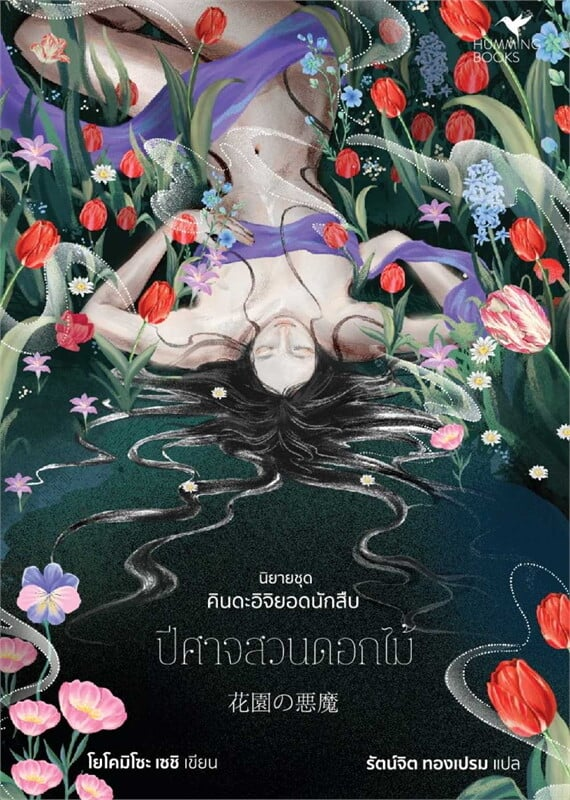

ปีศาจสวนดอกไม้ โดย โยโคมิโซะ เซชิ (ในซีรีส์ คินดะอิจิ ยอดนักสืบ) สำหรับแฟน ๆ นิยายสืบสวนสอบสวน ซีรีส์คินดะอิจิยอดนักสืบเล่มนี้ไม่ทำให้ผิดหวัง! เรื่องราวเริ่มต้นขึ้นในสวนดอกไม้ที่เต็มไปด้วยความสวยงาม แต่ท่ามกลางดอกไม้หลากสี กลับเกิดเหตุฆาตกรรมปริศนาที่ท้าทายความสามารถของ คินดะอิจิ ฮาจิเมะ นักสืบหนุ่มผู้เฉียบแหลม เล่มนี้เต็มไปด้วยการสืบสวนชั้นเชิง ซ่อนเงื่อนปริศนาและเบาะแสเล็ก ๆ น้อย ๆ ที่จะทำให้ผู้อ่านต้องคอยตั้งคำถามอยู่ตลอดเวลา ความสามารถของคินดะอิจิในการเชื่อมโยงเหตุการณ์และแก้ปัญหาอย่างชาญฉลาด ทำให้เรื่องราวตื่นเต้นและคาดเดาไม่ได้ เหมาะสำหรับคนที่ชอบปริศนาฆาตกรรมแบบคลาสสิก และอยากทดสอบไหวพริบของตัวเองไปพร้อมกับนักสืบเลื่องชื่อ
หญิงสาวนางแบบนู้ดจากโตเกียวถูกพบเป็นศพในสวนดอกไม้ของเรียวกังกลางชนบท ร่างเปลือยของเธอถูกจัดท่าอย่างงดงามราวงานศิลป์แต่แฝงความสยอง คินดะอิจิถูกเรียกมาคลี่คลายคดี ที่เบื้องหลังความงามนั้นซ่อนปีศาจร้ายและ ความลับดำมืดของผู้คนในเรียวกังแห่งนั้น…
จะเกิดอะไรขึ้น เมื่อชายผู้หนึ่งมั่นใจว่าคนรักของเขาได้จากไปแล้ว… แต่ความจริงกลับไม่เป็นอย่างที่ใจคิด
เมื่อดอกเตอร์คุโรยานางิเริ่มทดลองสุดพิสดาร ด้วยการนำโครงกระดูกศพมาประกอบเนื้อคืนรูปลักษณ์ในอดีต… สิ่งที่เขาไม่อาจคาดคิด คือเข้าไปพัวพันกับคดีที่ยังไม่มีวันคลี่คลาย...
คินดะอิจิตั้งใจจะหนีความวุ่นวายไปพักผ่อนกลางป่า กับสารวัตรผู้ใกล้ชิด แต่สิ่งที่รออยู่กลับไม่ใช่ความสงบ… กลับเป็นคดีฆาตกรรมสุดสะเทือนขวัญที่ย้อนกลับมาหลอนหมู่บ้านอีกครั้ง พร้อมเงื่อนงำที่โยงใยกับความลึกลับในปัจจุบัน


การติดตามคดีปริศนาและเชื่อมโยงเบาะแสช่วยพัฒนาความสามารถในการคิดอย่างมีเหตุผลและแก้ไขปัญหาอย่างชาญฉลาด

เรื่องราวซับซ้อนและตัวละครที่น่าสนใจช่วยกระตุ้นจินตนาการและทักษะการมองโลกในมุมใหม่ ๆ

การสังเกตตัวละครและแรงจูงใจที่ซ่อนอยู่ช่วยให้เข้าใจจิตใจมนุษย์และความซับซ้อนของความสัมพันธ์

เรื่องราวลุ้นระทึกและปริศนาที่ต้องแก้ไขทำให้ผู้อ่านสนุกไปกับการไขคดีและพัฒนาสมาธิ

โยโคมิโซะ เซชิ (Seishi Yokomizo) คือหนึ่งในนักเขียนนิยายสืบสวนระดับตำนานของญี่ปุ่น ผลงานของเขาได้รับอิทธิพลจากนิยายสืบสวนตะวันตกในยุคทอง เช่นของอากาธา คริสตี แต่โดดเด่นด้วยบรรยากาศแบบญี่ปุ่นโบราณและการสำรวจจิตใจมนุษย์อย่างลึกซึ้ง
เขาคือผู้ให้กำเนิดตัวละครอันเป็นเอกลักษณ์ — คินดะอิจิ โคสุเกะ นักสืบหนุ่มหัวฟูผู้ดูซุ่มซ่าม แต่เฉียบแหลมเหนือใคร ซีรีส์คินดะอิจิของเขามีมากกว่า 70 เรื่อง และได้รับการดัดแปลงเป็นภาพยนตร์ ละคร และซีรีส์หลายเวอร์ชัน กลายเป็นหนึ่งในผลงานอมตะของวงการนิยายญี่ปุ่น